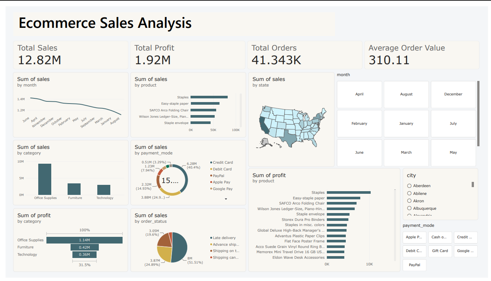

Project 01 / End-to-end analysis
Ecommerce Sales Analysis
Overview
This project takes a messy raw ecommerce dataset of over 113,000 orders and turns it into clear business insights. I cleaned the data with Python (pandas and numpy) by removing duplicates, handling missing values, fixing formats and filtering invalid records, then created new metrics such as sales, net amount and profit. The cleaned data was stored in MySQL and explored with SQL to answer questions on sales, top products and cities, payment modes and cancellations. Finally, I built an interactive Power BI dashboard to track sales, orders, categories and delivery performance.
Tools & technologies
The project was built using the following tools and technologies:
- 🐍 Python (pandas, numpy): Cleaned the raw data by removing duplicates, handling missing values, fixing data types and creating new metrics such as sales, net amount and profit.
- 📓 Jupyter Notebook: Used to write and document the cleaning workflow step by step.
- 🔌 SQLAlchemy and PyMySQL: Connected Python to MySQL and loaded the cleaned data into the database.
- 🗄️ MySQL and MySQL Workbench: Stored the cleaned orders data and ran SQL queries for analysis on sales, products, cities, payment modes and cancellations.
- 📂 Power Query: Used to load the MySQL data into Power BI.
- 📊 Power BI Desktop: Main data visualization platform used to build the interactive dashboard.
- 🧠 DAX (Data Analysis Expressions): Used for calculated measures such as Total Sales, Total Profit and Total Orders.
Dashboard previews


Content from the project README on GitHub ↗.